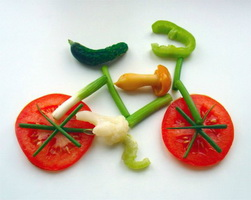
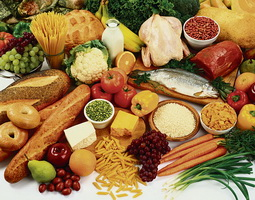
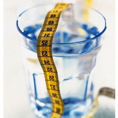
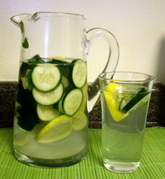

ПРОГРАММЫ ПИТАНИЯ

ПИТАНИЕ:

Я не сторонник каких-либо конкретных диет. Рекомендую придерживаться некоторых правил:
- Есть часто, но понемногу.
- Количество еды должно помещаться в две твои ладошки.
- Отказаться от сладкого и мучного. Хлеб можно есть заварной на хмелю, т.е не дрожжевой.
- Побольше белка: отварная куриная грудка, отварное яйцо-белок, творог с 0% жирности.
- Цитрусы лучше исключить, в них много сахарозы (это углеводы).
- Сладкое можно заменить фруктами, при этом есть их в первой половине дня, но не более двух видов в день, например яблоко и груша или персик и ананас.
- Первые две недели для сброса веса НЕ ЕСТЬ: каши, рис и корнеплоды (картошка, свекла, морковка)
- Каши можно все, кроме пшонной, но максимум 2 раза в неделю.
- Не забываем, что картошка - продукт с крахмалом, поэтому ее можно только 1 раз в неделю (это для тех, кто без нее жить не может)
- Супы можно не жирные, без зажарки, желательно на втором бульоне (курица, индюшка, говядина)
- Исключаем из рациона: свинину (самое жирное мясо), жирную птицу, баранину, колбасу
- Чай и кофе пить без сахара и молока. Кофе лучше заменить зеленым чаем
- Исключить газированные напитки
- Жареное, соленое (огурцы, помидоры), копченое - нельзя
- Вареное, пареное, печеное (без жира) - можно
ВОДА:

Я раньше пила очень мало воды. Жидкости вообще практически не употребляла, имела избыточный вес и не могла с ним долго расстаться, пока, как ни странно, не начала пить простую воду. Мне удалось похудеть, выгляжу прекрасно, у меня полно сил и энергии, кожа улучшилась, хорошо увлажнена Что происходит, когда мы пьем много воды?
- Пропадает постоянное чувство голода, потому как вода действует насыщающе
- Количество потребляемой пищи автоматически сокращается
- Исчезает зависимость от сладкого и мучного
- Вода способствует пищеварению
- Стимулируются обменные процессы в клетках
- Вода способствует усвоение витаминов, минералов и микроэлементов
- Только при помощи воды клетки могут синтезировать жизненно важные протеины и продуцировать энергию, необходимую для расщепления жиров
- Вода регулирует температуру тела
- Организм очищается от токсинов и продуктов жизнедеятельности
- Вода поставляет питательные элементы, кислород и глюкозу в клетки, давая нам энергию
- Происходит естественное увлажнение кожи и других тканей
- Суставы стают более гибкими, а мышцы – крепкими
ВОДА САССИ:

Название напитка, который известен как «вода Сасси» произошло от имени американки Синтии Сасс. Витаминная водичка улучшает работу желудочно-кишечного тракта, уменьшит газообразование, ускорит расщепление жиров при похудении и способствует выведению продуктов метаболизма.
РЕЦЕПТ
2 литра родниковой (либо питьевой бутилированной) воды;
1 чайная ложка тертого имбиря;
1 огурец, тщательно очищенный и тонко нарезанный кружочками;
1 лимон, очень тонко нарезанный кружочками;
дюжина маленьких листиков мяты (свежих). Все ингредиенты укладывают в емкость (листья мяты предварительно надрывают руками), заливают водой. Готовить напиток рекомендуется вечером, на ночь (на 10-12 часов) емкость ставят на нижнюю полку холодильника. В течение следующего дня выпиваем всю воду. ? Все ингредиенты напитка должны быть качественными
е-mail: supergirl2013@mail.ru
тел: 067-639-08-73
инстаграмм: novoe_telo
Copyright © 2015 Спортивная диета "YOU-IDEAL"